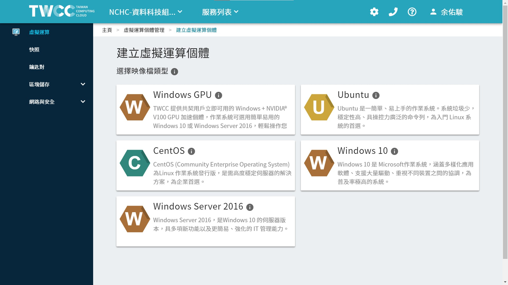

Initial Status
TWCC-VCS 上面有多個映像檔可做建立的選擇。
我選擇使用 ubuntu 來建立一個 VCS。

以下是 TWCC 預設會先執行的 script，我盡可能註解。
另外也註記一開始會安裝哪些東西，或是有哪些設定。
然後記得 VCS 剛啟動的時候，建議最好 sudo reboot 重新開機一下，
之前的經驗是有一些檔案好像還處於 lock 狀態。
--
Content:
script history
成功啟動 VCS 之後，連線進去會發現在啟動 VCS 服務時，TWCC 已經幫我們做了很多的設定，
透過 history 我們可以略知一二。
ubuntu
這個檔案在 ubuntu 使用者的家目錄下。
cd /home/ubuntu/
cat .bash_historyls
sudo vim /etc/ssh/ --vim 一個資料夾，會顯示該資料夾下的所有檔案列表。
sudo su --進入超級權限管理者。
exit --退出超級權限管理者
ls
vim /etc/hosts --顯示該資料夾下的所有檔案列表。
sudo vim /etc/hosts --顯示該資料夾下的所有檔案列表。這和網路有相關。
exit --以 ubuntu 使用者退出 VCS，之後再進來
sudo vim /etc/hosts --顯示該資料夾下的所有檔案列表。
vim /etc/sysctl.conf --網路相關的設定，最後面加了三行。(我猜啦)
sudo vim /etc/sysctl.conf
> net.ipv6.conf.all.disable_ipv6 = 1 <br>
> net.ipv6.conf.default.disable_ipv6 = 1 <br>
> net.ipv6.conf.lo.disable_ipv6 = 1
sudo reboot --重新開機。
sysctl -- Linux 下的 sysctl 指令可以用作檢視及修改執行中的 Kernel 變數。
sysctl -a|grep "ipv6\|disable" --grep列出上述列表符合條件的Kernel變數。
sysctl -a|grep "ipv6\|disable\| 1"
sudo vim /etc/apt/sources.list --apt 的 resource 來源，加上 http://free.nchc.org.tw/ubuntu。
sudo apt-get install zsh --安裝zsh模組。不知道下面為何要新安裝卸除好幾次。
sudo apt-get remove zsh
sudo vim /etc/apt/sources.list
sudo apt-get install zsh
sudo apt-get update
sudo apt-get install zsh
sudo apt-get remove zsh
sudo apt-get install zsh
sudo apt-get remove zsh
exit
date
exit
apt-get install ntp
sudo apt-get install ntp --安裝ntp、ntpd模組。ntp: Network Time Protoco。提供網路上可以進行網路校時的主機功能。
sudo apt-get install ntpd
sudo apt-get install ntp
sudo apt-get update
sudo apt-get install ntp
> NTP 服務（ntpd）本身就有自動校時的功能，若啟用 NTP 服務後，就不可以使用 ntpdate 的方式校時，兩者僅能擇一使用。
ls
vim /etc/apt/sources.list
exit
ping free.nchc.org.tw
vim /etc/apt/sources.list
sudo vim /etc/apt/sources.list
sudo apt-get update
sudo apt-get install ntp
sudo ntpdate 140.110.16.1 --手動校正時間。
sudo apt-get install ntpdate
sudo ntpdate 140.110.16.1
systemctl stop ntp --停止自動校正時間。
sudo systemctl stop ntp
sudo ntpdate 140.110.16.1
sudo yum update -y
tmux --tmux 終端機管理工具，分割視窗、同時開啟多個終端機。
exit
sudo apt-get upgrade -y
date
sudo dpkg-reconfigure tzdata --改變timezone。
date
vim /etc/ntp.conf --設定ntp對準時間的相關參數與來源。
sudo vim /etc/ntp.conf
sudo systemctl restart ntp
sudo systemctl status ntp
vim /etc/hosts
hostname --知道此 VCS 的名稱
vim /etc/hosts --知道網路的設定
sudo vim /etc/hosts
ntpq -p --列出目前我們的 NTP 與相關的上層 NTP 的狀態。列印出該伺服器已知的節點列表和它們的狀態概要信息。
cat /etc/hosts
sudo vim /etc/apt/sources.list
sudo su
cat /etc/apt/sources.list
exit--
root
這個檔案在 ubuntu 使用者的家目錄下。
cd /root/
cat .bash_history指令
systemctl <操作指令> <服務名稱.service>
在 Systemd 中每一個系統服務就稱為一個服務單位（unit），而服務單位又可以區分為 service、socket、target、path、snapshot、timer 等多種不同的類型（type），我們可以從設定檔的附檔名來判斷該服務單位所屬的類型，最常見的就是以 .service 結尾的系統服務，大部分的伺服器都是屬於這種。
如果要管理 Systemd 中的各種服務，可以使用 systemctl 這個指令，配合各種操作指令來進行各種操作。
1 vim /etc/ssh/sshd_config --修改ssh連線的config。
2 systemctl |grep ssh --列出 ssh 連線這個服務的狀態。
3 systemctl restart ssh --重啟 ssh 連線服務。
4 exit
5 apt upgrade
6 apt-get upgrade
7 apt-get install zip
8 apt-get update
9 vim /etc/apt/sources.list
10 apt-get update
11 exit
12 sudo vi /etc/systemd/system/rc-local.service
13 sudo vi /etc/rc.local
14 sudo chmod +x /etc/rc.local
15 sudo systemctl enable rc-local
16 sudo systemctl start rc-local.service --重啟服務。 <br>
17 sudo systemctl status rc-local.service
18 sudo vi /etc/rc.local
19 sudo systemctl status rc-local.service
20 sudo systemctl start rc-local.service
21 sudo systemctl status rc-local.service
22 sudo vi /etc/rc.local
23 sudo systemctl start rc-local.service
24 sudo systemctl status rc-local.service
25 rebootapt
// 列出可安裝的套件，共 67371 個。
apt list
apt list | wc -l
// 列出有安裝的套件，並計算個數，共 516 個。
apt list --installed | wc -l
// 列出 dcoker 開頭的套件。
apt list | grep ^docker一開始安裝的套件有 516 個。
其中並沒有 docker。
比較重點有的是 vim, zsh, python3.6, perl, openssl, ntp, nano, gzip, git, ftp, gcc-8-base, dpkg, fdisk, curl, apt。
//列出可安裝的套件，共 67371 個。
apt list
apt list | wc -l安裝 vim:
// 一定要先更新 apt-get 這個工具，不然後面其實會出問題。
apt-get update
// 安裝
apt-get install vimdf
磁碟使用的初始狀況、可以看容量
-h, --human-readable print sizes in powers of 1024 (e.g., 1023M)
df -h
Filesystem Size Used Avail Use% Mounted on
udev 7.9G 0 7.9G 0% /dev
tmpfs 1.6G 740K 1.6G 1% /run
/dev/vda1 97G 3.1G 94G 4% /
tmpfs 7.9G 0 7.9G 0% /dev/shm
tmpfs 5.0M 0 5.0M 0% /run/lock
tmpfs 7.9G 0 7.9G 0% /sys/fs/cgroup
/dev/vda15 105M 3.6M 101M 4% /boot/efi
tmpfs 1.6G 0 1.6G 0% /run/user/1000